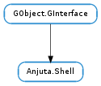

| add_value(name, value) | |
| add_widget(widget, name, title, stock_id, placement) | |
| add_widget_custom(widget, name, title, stock_id, label, placement) | |
| add_widget_full(widget, name, title, stock_id, placement, locked) | |
| freeze() | |
| get_object(iface_name) | |
| get_value(name, value) | |
| hide_dockable_widget(widget) | |
| iconify_dockable_widget(widget) | |
| maximize_widget(widget_name) | |
| present_widget(widget) | |
| remove_value(name) | |
| remove_widget(widget) | |
| save_prompt(prompt) | |
| saving_pop() | |
| saving_push() | |
| session_load(session_directory) | |
| session_save(session_directory) | |
| show_dockable_widget(widget) | |
| thaw() | |
| unmaximize() |
None
| Name | Parameters | Return | Description |
|---|---|---|---|
| load-session | int, GObject.Object | ||
| save-prompt | GObject.Object | ||
| save-session | int, GObject.Object | ||
| value-added | str, GObject.Value | ||
| value-removed | str |
Bases: GObject.GInterface
| Parameters: |
|
|---|---|
| Raises: |
Sets a value in the shell with the given name. Any previous value will be overridden. “value_added” signal will be emitted. Objects connecting to this signal can then update their data according to the new value.
| Parameters: |
|
|---|---|
| Raises: |
Adds widget in the shell. The placement tells where the widget should appear, but generally it will be overridden by the container (dock, notebook, Gtk.Container etc.) saved layout.
| Parameters: |
|
|---|---|
| Raises: |
Adds widget in the shell. The placement tells where the widget should appear, but generally it will be overridden by the container (dock, notebook, Gtk.Container etc.) saved layout.
Using this method you can pass a custom widget as label.
| Parameters: |
|
|---|---|
| Raises: |
Adds widget in the shell. The placement tells where the widget should appear, but generally it will be overridden by the container (dock, notebook, Gtk.Container etc.) saved layout.
Normally just use Anjuta.Shell.add_widget () because you do not use locking.
| Raises: | GLib.GError |
|---|
Freezes addition of any UI elements (widgets) in the shell. All widget additions are queued for later additions when freeze count reaches 0. Any number of this function can be called and each call will increase the freeze count. Anjuta.Shell.thaw () will reduce the freeze count by 1 and real thawing happens when the count reaches 0.
| Parameters: | iface_name (str) – The interface implemented by the object to be found |
|---|---|
| Raises: | GLib.GError |
| Returns: | A plugin object implementing the primary interface or None. |
| Return type: | GObject.Object |
Searches the currently available plugins to find the one which implements the given interface as primary interface and returns it. If the plugin is not yet loaded, it will be loaded and activated. The returned object is garanteed to be an implementor of the interface (as exported by the plugin metafile). It only searches from the pool of plugin objects loaded in this shell and can only search by primary interface. If there are more objects implementing this primary interface, user might be prompted to select one from them (and might give the option to use it as default for future queries). A typical usage of this function is:
GObject *docman =
anjuta_plugins_get_object (shell, "IAnjutaDocumentManager", error);
Notice that this function takes the interface name string as string, unlike anjuta_plugins_get_interface() which takes the type directly.
| Parameters: |
|
|---|---|
| Raises: |
Gets a value from the shell with the given name. The value will be set in the passed value pointer.
| Parameters: | widget (Gtk.Widget) – a Gtk.Widget to hide. |
|---|---|
| Raises: | GLib.GError |
If the widget is dockable, it hides it.
| Parameters: | widget (Gtk.Widget) – a Gtk.Widget to iconify. |
|---|---|
| Raises: | GLib.GError |
If the widget is dockable, it iconifies it.
| Parameters: | widget_name (str) – Name of the widget to be maximized. |
|---|---|
| Raises: | GLib.GError |
Maximizes a widget so it will occupy all the possible space.
| Parameters: | widget (Gtk.Widget) – The widget to present |
|---|---|
| Raises: | GLib.GError |
Make sure the widget is visible to user. If the widget is hidden, it will be shown. If it is not visible to user, it will be made visible.
| Parameters: | name (str) – Name of the value to remove |
|---|---|
| Raises: | GLib.GError |
Removes a value from the shell with the given name. “value_removed” signal will be emitted. Objects connecting to this signal can then update their data/internal-state accordingly.
| Parameters: | widget (Gtk.Widget) – The widget to remove |
|---|---|
| Raises: | GLib.GError |
Removes the widget from shell. The widget should have been added before with Anjuta.Shell.add_widget.
| Parameters: | prompt (Anjuta.SavePrompt) – |
|---|---|
| Raises: | GLib.GError |
Decrease the count of files that need to be saved
| Parameters: | session_directory (str) – |
|---|---|
| Raises: | GLib.GError |
| Parameters: | session_directory (str) – |
|---|---|
| Raises: | GLib.GError |
| Parameters: | widget (Gtk.Widget) – a Gtk.Widget to show. |
|---|---|
| Raises: | GLib.GError |
If the widget was hidden or iconified, it will make it visible.
| Raises: | GLib.GError |
|---|
Reduces the freeze count by one and performs pending widget additions when the count reaches 0.
| Raises: | GLib.GError |
|---|
Unmaximizes the UI which was previously maximized by Anjuta.Shell.maximize_widget